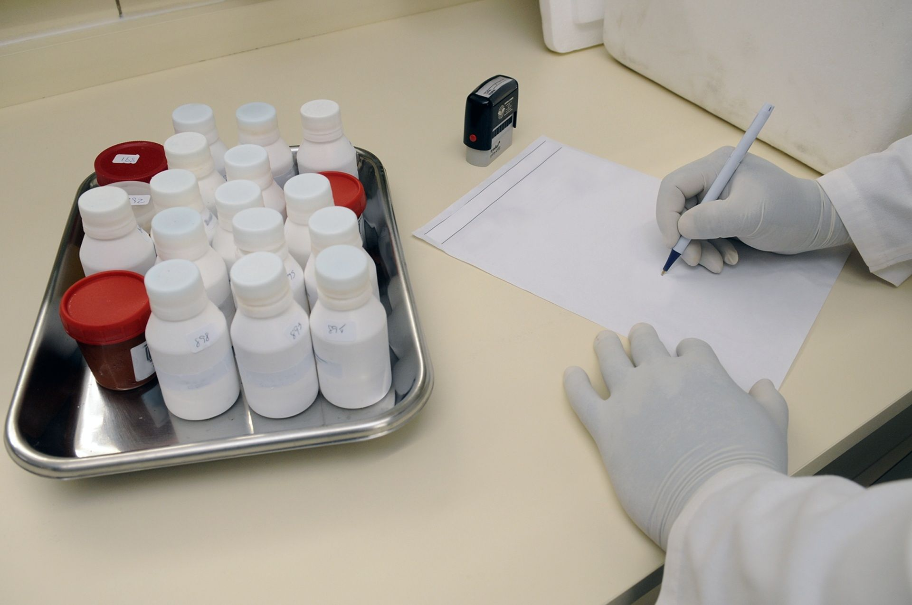
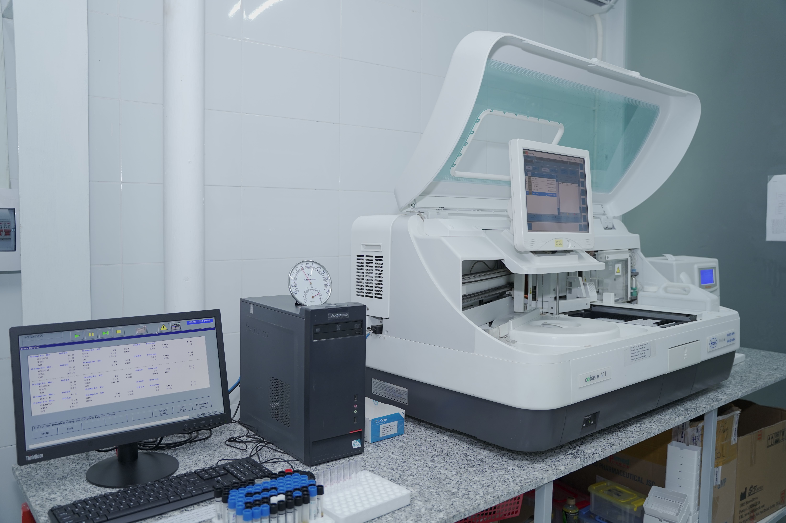

Measure today. Understand tomorrow.
A more editorial, health-insight-led landing experience for preventive screening and recurring wellness checks.
Energy & fatigue
Iron, vitamins, thyroid and metabolic markers.
Heart health
Lipid and inflammation-oriented screening.
Blood sugar
Fasting glucose and long-term indicators.
Women's wellness
Preventive profiles for everyday health tracking.
Choose by the question you want answered.
Instead of making patients decode test names, this layout starts with a health goal and maps it to an appropriate demo package.
Baseline 45
45 common markers.
Metabolic 32
Glucose, lipids and liver markers.
Performance 38
Nutrition and recovery-oriented markers.
Senior 86
Broader preventive screening.
Turn raw values into a clearer report experience.

Trend ready
Future backend integration can plot repeat test values over time.
Downloadable
Static PDF demo included for report download behavior.
Reference ranges
Keep common biomarker ranges beside results for quicker context.
Four screens. One continuous experience.
Choose
Search by test or health goal.
Schedule
Pick home or lab collection.
Track
Follow sample checkpoints.
Review
Access and download reports.
From booking to report, keep every step visible.
Choose a test, schedule collection and access completed reports from one patient-friendly portal.

Technology is only useful when the process is visible.
The template separates collection, processing, verification and release, so quality messaging stays specific rather than generic.